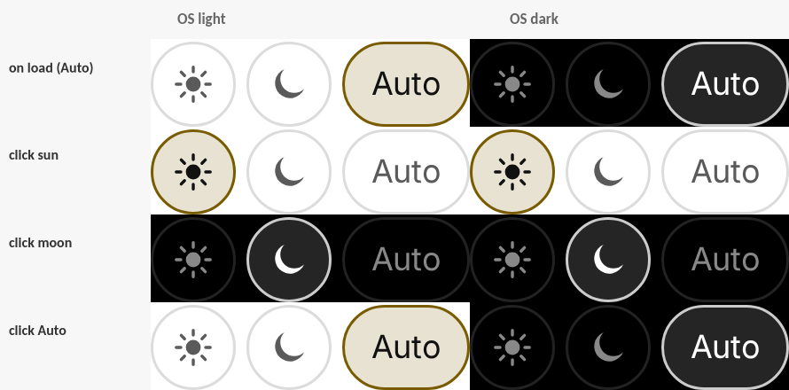

Demo assets for ing-bank/lion#2878 (merged) and its follow-up #2909.
Rows = on load / click sun / click moon / click Auto. Columns = OS light | OS dark. All three options are always on screen and exactly one is always selected; Auto follows the OS, an explicit choice overrides it.

Auto (OS light) → light → dark → Auto → OS flips to dark (Auto follows) → pinned light while the OS is dark → Auto again.
Page title gradient, the search box and the blog tag now follow the theme.